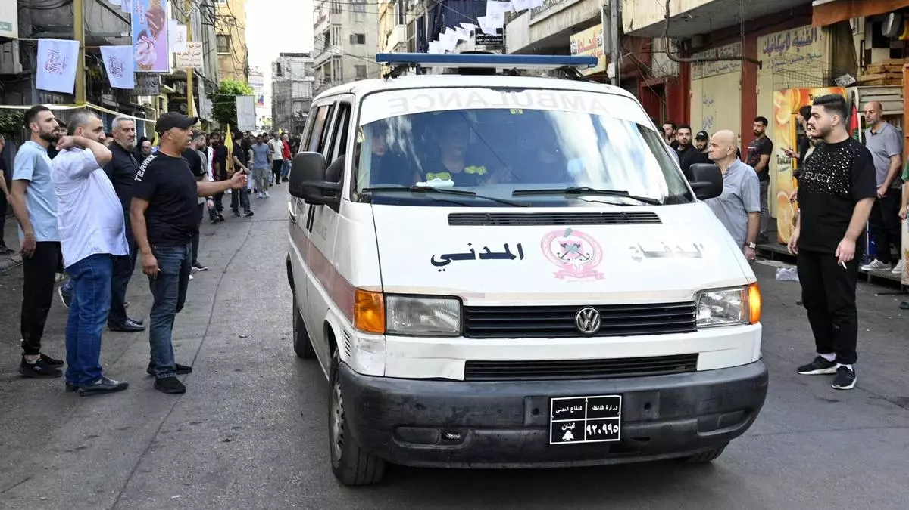

Una nueva oleada de explosiones en 'walkie-talkies' deja nueve muertos en varias ciudades de Líbano por parte de Israel
Irán ha calificado como "un acto terrorista y un asesinato en masa" la explosión simultánea de miles de buscas en manos de miembros del grupo chií Hizbulá en Líbano, aliado de Teherán. El ataque provocó la muerte de al menos 12 personas, entre ellas una niña y un niño, y 2.800 heridos, de los cuales unos 1.800 ingresaron en diversos hospitales. En dicho ataque resultó herido el embajador de Irán en Líbano, Mojtaba Amani, quien según las versiones oficiales se encuentra en buen estado. Sin embargo, lo más relevante de este asunto y lo que se pregunta todo el mundo es cómo pudo Israel acometer una operación de semejante envergadura. Aunque Israel mantiene silencio sobre la autoría del ataque, todo el mundo da por supuesto que es obra suya.